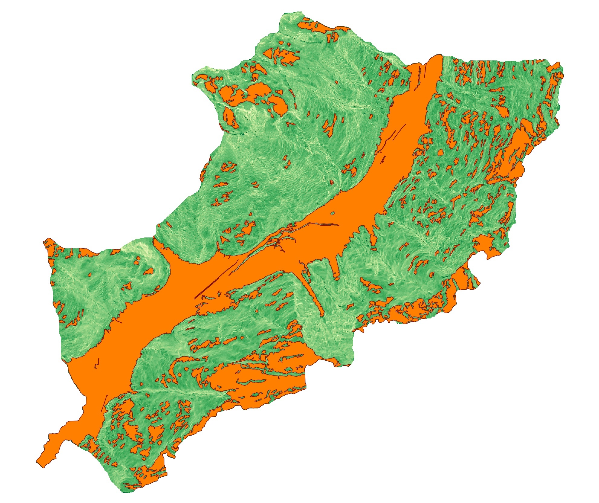

Workflow
What we did and how we did it
Starting data and preliminary analysis
- DTM (Digital Terrain Model)
The Digital Terrain Model is a digital representation of the Earth's surface, capturing the elevation or height values of the terrain. It provides a detailed three-dimensional description of the topography, including mountains, valleys, ridges, and other surface features. - NDVI (Normalized Difference Vegetation Index)
The Normalized Difference Vegetation Index is a numerical indicator used to assess the health and vigor of vegetation. NDVI is calculated using the reflectance values of near-infrared (NIR) and red light bands. The index quantifies the difference between the reflectance of vegetation (which strongly reflects NIR) and non-vegetation surfaces (which reflect both NIR and red light). NDVI values range from -1 to +1, with higher values indicating denser and healthier vegetation cover. - DUSAF (Digital Urban Surface Analysis Factors)
The Digital Urban Surface Analysis Factors, refers to a set of variables or factors that are derived from high-resolution remote sensing data and used to assess the urban environment. These factors typically include land cover types, impervious surface extent, building density, green spaces, road networks, and other urban characteristics. DUSAF serves as a basis for analyzing urban patterns, quantifying the urban heat island effect and assessing urban sprawl. - Buffer layers of rivers, roads and faults
The buffer layer is generated by expanding or buffering the original features outward by the specified distance. The resulting buffer zone is represented as a new polygon layer that surrounds the original features. By creating buffer layers around river lines, road lines, and fault lines, spatial analysis can be conducted to assess their relationships with other features, as landslide, identify areas within certain distances, evaluate potential impacts. These buffer layers contribute to better understanding of the spatial dynamics and interactions between these important geographical elements. - LS (Landslide Inventory)
The landslide inventory is a systematic collection and documentation of information related to landslides in a specific area. It involves identifying, mapping, and cataloging landslides, including their location, characteristics, and attributes. Our landslide inventory contains the typology of the landslid; this information is crucial for understanding landslide patterns assessing their potential risks.
| Coordinate Reference System (CRS) | EPSG:32632 - WGS 84 / UTM zone 32N |
| Units | meters |
| Method | Universal Transverse Mercator (UTM) |
| Celestial body | Earth |
| Accuracy | Based on World Geodetic System 1984 ensemble (EPSG:6326), which has a limited accuracy of at best 2 meters. |
QGIS map rappresentation of the given data
- Buffer layers of
Step 1 - Data processing for susceptibility mapping
QGIS analysis: slope, aspect, curvature
In a first place with slope, aspect, curvature tool we perform a terrain analysis and characterization strating from the DTM layer.
-
Slope
The slope tool calculates the steepness of the terrain at each location on a raster surface. It measures the rate of change in elevation between neighboring cells and expresses it as a percentage or degree.
-
Aspect
The aspect tool determines the compass direction that a slope faces at each location on a raster surface. It provides information on the orientation of the terrain, indicating whether a slope faces north, south, east, or west. Aspect analysis is useful for understanding the exposure of slopes to sunlight and wind patterns.
-
Curvature:
The curvature tool calculates the rate of change in slope along a raster surface. It provides information about the concavity or convexity of the terrain, indicating whether a location is part of a ridge, valley, or flat area.
Defining the no landslide zone (NLZ)
Then from the Landslide dataset we defin the areas with low possibility of landslides, the No LandslideZone (NLZ). We defined this areas as the slopes with angle smaller then 20° or grater then 70° using the raster calculator.  Since there are enough big NLZ zones, and many smaller ones we filter the raster removing very small patches of pixels using a filter of 200 as a first try and then of 400 and 600 to filter more small patches of pixels. To do that we use the Sieve tool. After vectorizing the output raster we obtain, as results, the polygons of NLZ (using r.to.vect).
Since the NLZ layer has been computed with some approximation there are some part of it that overlaps with the LS layer. To proceed with the analysis we have to reaper this and to do that we use the Difference tool that allow us to remove from NLZ layer the LS overlapping parts.
Training and Testing
We define a new field Hazard in the attribute tables of both Landslide Inventory and NLZ assigning 0 to the NLZ and 1 to the LS. We decide the training-testing ratio to use for our machine learning model: 70% training - 30% testing. Then, we create a new text attribute Train_Test and we assigne the value Training or Testing according to the selected polygons. We did it usign the tool Random Selection to assign to random polygons the value of Training or Testing. Furthermore we use Merge with LS and NLZ layrers. In a first place we define 1000 points within the area: 700 for train and 300 for test divided in the Hazard with value 1 and 0, so we obtaine
| Train_Test | Hazard | Number of points |
| Training | 0 | 350 |
| Training | 1 | 350 |
| Testing | 0 | 150 |
| Testing | 1 | 150 |
STEP 2 - susceptibility map generation
For the generation of the susceptibility map we use R in QGIS with the ModelMap given script. Then we validate the output reclassifying the resulted layer in two classes and with reference to the Hazard column we use Accuracy Assessment and Sampling in processing scripts tools on the Sucebbility maps and testing point obtained from previous computation.

{kind=link}
{kind=link}
{kind=link}
{kind=link}
{kind=link}
{kind=link}
{kind=link}
{kind=link}
{kind=link}
{kind=link}
{kind=link}
{kind=link}
{kind=link}
{kind=link}
{kind=link}
{kind=link}
{kind=link}
{kind=link}
STEP 3 - Data preprocessing for exposure assessment
To analyze the exposure assessment we downloaded the population raster dataset (WorldPop map) and we reproject the population raster dataset
using the same CRS of the sub-area vector layer and the susceptibility map obtained in the previous step. Using the Raster calculator we reclassify the susceptibility raster map in 4 classes:
[0, 0.25) = low;
[0.25, 0.5) = moderate;
[0.5, 0.75) = high;
[0.75, 1] = very high.
STEP 4 - Exposure assessment
The Exposure assessment is an important part of the analysis aimed at identify and evaluate the elements at risk within a hazard zone. It involves assessing the presence and characteristics of people, buildings,
infrastructure that may be exposed to potential landslides. The primary goal of exposure assessment is to quantify and understand the vulnerability
of the elements at risk, which helps in the formulation of effective risk mitigation strategies. By analyzing the spatial overlap between landslide-prone areas and exposed
elements, it becomes possible to identify high-risk zones and assess the potential consequences of landslides on human settlements and infrastructure.
To calculate the population exposure, we performed a resampling of the susceptibility map layer, aligning it with the resolution of the clipped population raster dataset,
which was approximately 81.67 meters.
Using Raster layer zonal statistics we can obtain the needed information that then we plot with a pie chart to show the percentage of population per each susceptibility
class (defined in the previous step).
STEP 5 - Develop a website and WebGIS
As last step we created a WebGIS that enables the visualization with the analyzed maps and the landslide susceptibility map. Through intuitive interfaces and interactive functionalities, users can navigate through our maps, zoom in/out, toggle different layers, and access supplementary information, enhancing their understanding of the landslide susceptibility assessment and related spatial data. Furthermore, ur WebGIS platform is equipped with these base maps:
-
Stamen Toner:
This map style offers a sleek, high-contrast design, emphasizing roads, labels, and boundaries with crisp black and white tones. It provides a visually striking representation, ideal for highlighting important geographic features. -
Stamen Watercolor:
The Stamen Watercolor base map brings a hand-drawn aesthetic to the map. It beautifully renders landscapes, buildings, and water bodies with watercolor-style brush strokes, adding a touch of creativity and elegance. - Bing Maps Aerial:
The Bing Maps Aerial is a map with high-resolution satellite photographs, that offers a bird's-eye view of landscapes, cities, and landmarks, allowing to explore and analyze areas from an aerial perspective. - Bing Maps Roads:
The Bing Maps Roads base map focuses on road networks, providing detailed information on streets, highways, and transportation infrastructure. This map is particularly useful for route planning, navigation, and understanding the connectivity of road systems. - OpenStreetMap:
Built collaboratively by a global community, OpenStreetMap is a crowd-sourced and constantly evolving map that offers comprehensive coverage worldwide. It includes detailed information about roads, buildings, landmarks, and points of interest, providing a rich and up-to-date mapping foundation.